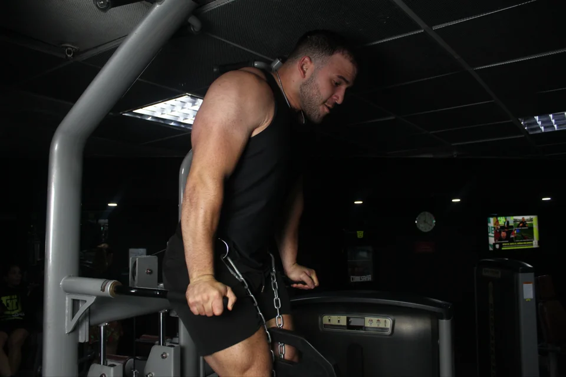
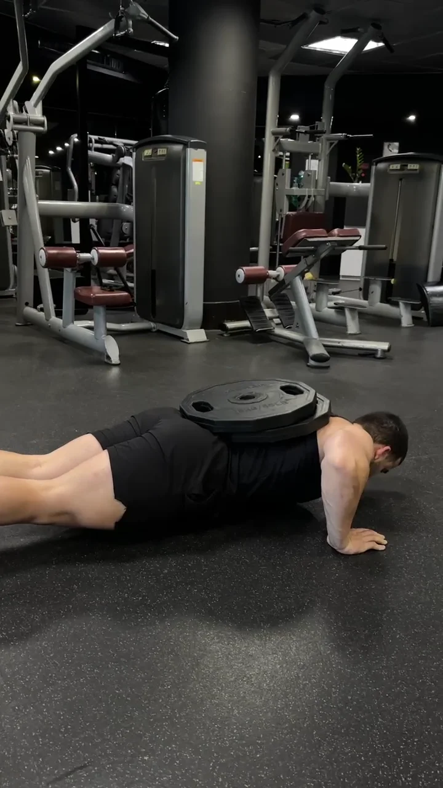
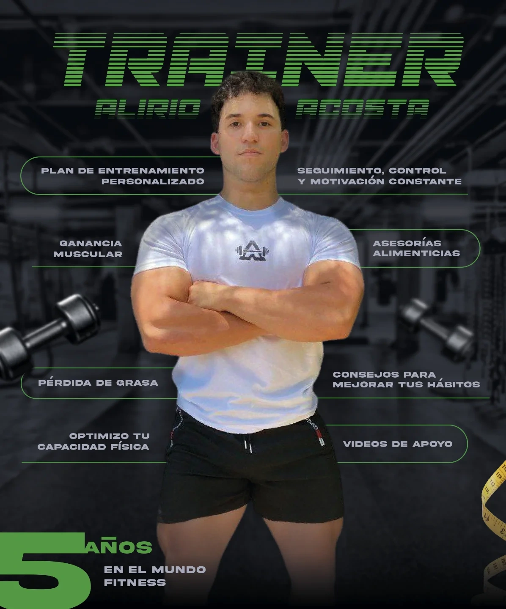
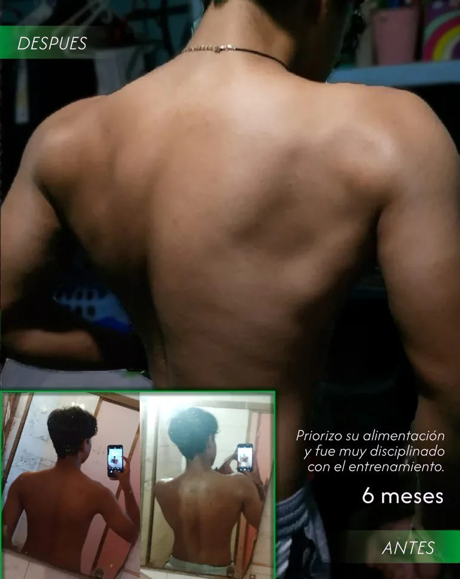
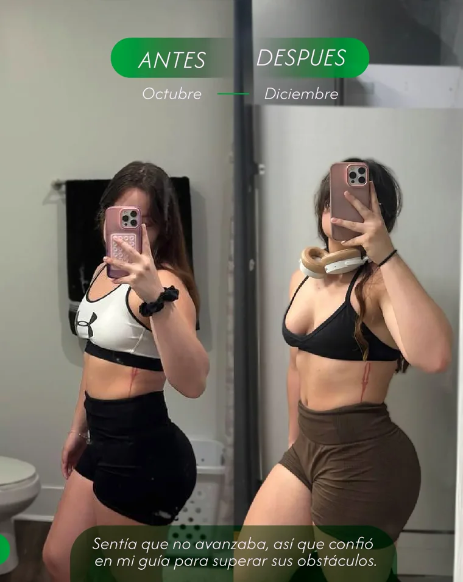
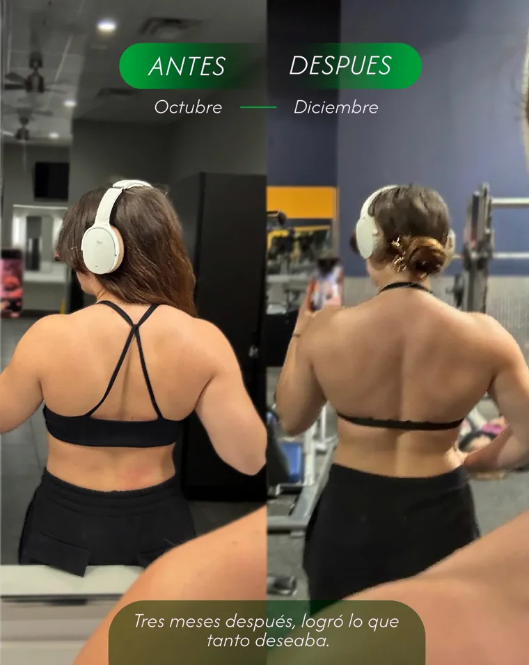
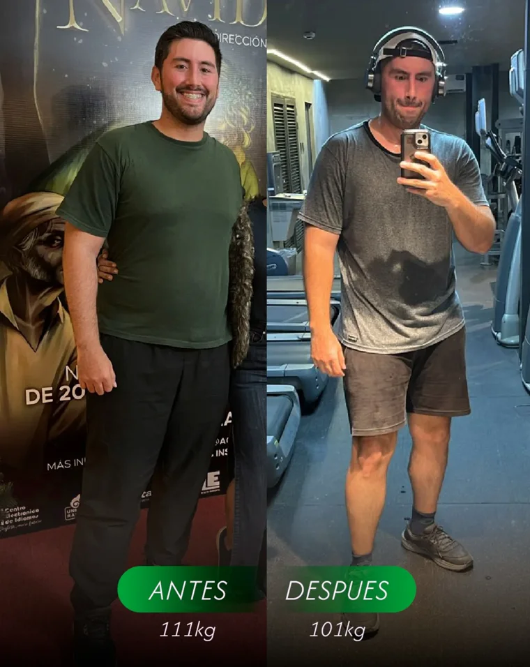
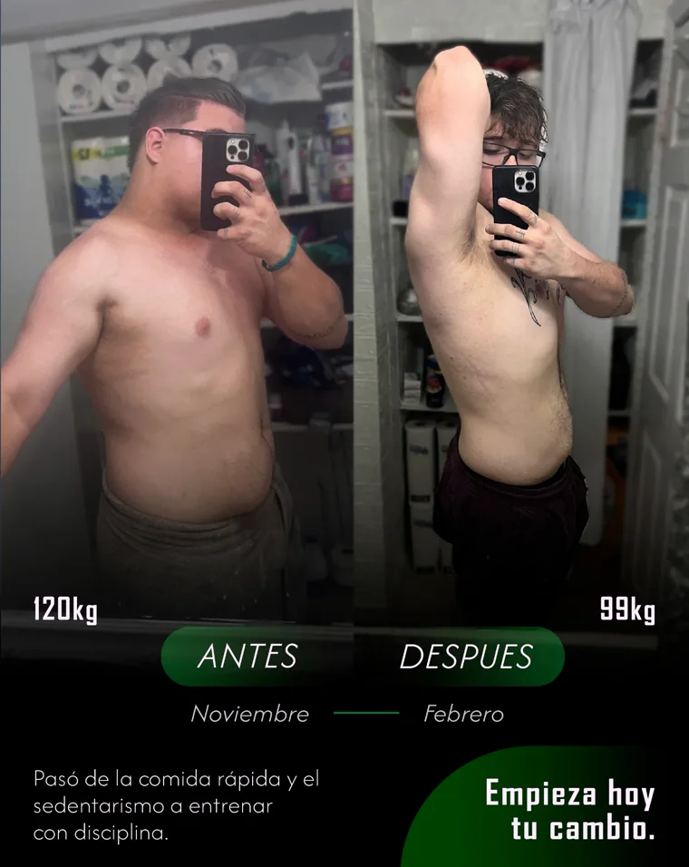

Rutina en gimnasio
Trabaja tu fuerza y tu técnica con ejercicios adaptados a tu nivel. Puedes consultar por entrenamiento presencial en Maracaibo o asesoría online.
Consultar rutina de gimnasioEntrenamiento personalizado
Rutinas para casa o gimnasio, orientación alimentaria y seguimiento individual con Alirio Acosta.
Asesorías
Cuéntame tu objetivo y dónde entrenas. A partir de ahí elegimos la asesoría que mejor encaje contigo.

Trabaja tu fuerza y tu técnica con ejercicios adaptados a tu nivel. Puedes consultar por entrenamiento presencial en Maracaibo o asesoría online.
Consultar rutina de gimnasio
Entrena con una rutina pensada para tu espacio, tu equipo y el tiempo que tienes disponible, con seguimiento individual por chat.
Consultar rutina en casaRecibe orientación sobre hábitos de alimentación que puedas incorporar a tu día a día y que acompañen tu entrenamiento.
Consultar sobre alimentación
Tu entrenador
Soy entrenador personal certificado. Te ayudo a organizar tu entrenamiento según tu nivel y tus objetivos, tanto si estás empezando como si ya llevas tiempo entrenando.
Hablamos de tu objetivo, tu experiencia y dónde prefieres entrenar.
Acordamos la asesoría y si la prefieres por cita o por suscripción.
Conversamos de forma individual sobre tu progreso y tus dudas.

Priorizó su alimentación y fue muy disciplinado con el entrenamiento.

Sentía que no avanzaba, así que confió en mi guía para superar sus obstáculos.

Tres meses después, logró lo que tanto deseaba.

Antes 111 kg · Después 101 kg

Pasó de la comida rápida y el sedentarismo a entrenar con disciplina.
Antes de empezar
Sí. Cuéntame qué experiencia tienes y con qué equipo cuentas para adaptar la rutina a tu punto de partida.
Trabajamos con una rutina adaptada a tu objetivo. El seguimiento de tus cambios y dudas se hace de forma individual por chat.
La atención presencial es en Maracaibo. Mi horario de atención es de 6:00 a. m. a 9:00 p. m., hora de Venezuela. Escríbeme para confirmar la sede y los horarios disponibles.
Escríbeme para consultar el precio de la cita o suscripción que te interese. Puedes pagar por Pago Móvil, en efectivo o por Binance.
Contacto
Escríbeme por WhatsApp o prepara aquí una consulta sobre la asesoría que te interesa.